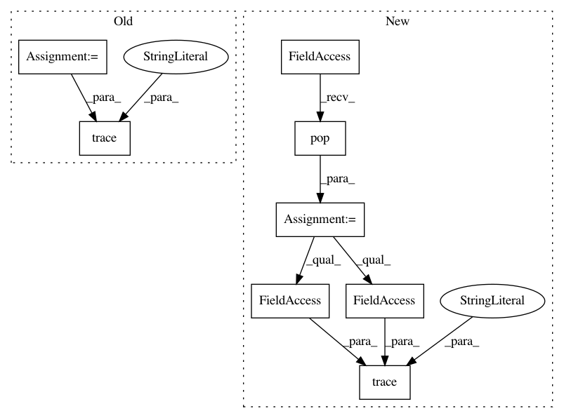

46309771bbddd202267030f42a6f067294f7a626,plugins/extract/align/_base.py,Aligner,finalize,#Aligner#Any#,158
Before Change
self._output_faces.append(face)
if len(self._output_faces) != self._faces_per_filename[filename]:
continue
retval = dict(filename=filename, image=image, detected_faces=self._output_faces)
self._output_faces = []
logger.trace("Yielding: (filename: "%s", image: %s, detected_faces: %s)",
retval["filename"], retval["image"].shape, len(retval["detected_faces"]))
yield retval
// <<< PROTECTED METHODS >>> //
// <<< PREDICT WRAPPER >>> //
After Change
if len(self._output_faces) != self._faces_per_filename[filename]:
continue
output = self._extract_media.pop(filename)
output.add_detected_faces(self._output_faces)
self._output_faces = []
logger.trace("Final Output: (filename: "%s", image shape: %s, detected_faces: %s, "
"item: %s)",
output.filename, output.image_shape, output.detected_faces, output)
yield output
// <<< PROTECTED METHODS >>> //
// <<< PREDICT WRAPPER >>> //
In pattern: SUPERPATTERN
Frequency: 3
Non-data size: 8
Instances
Project Name: deepfakes/faceswap
Commit Name: 46309771bbddd202267030f42a6f067294f7a626
Time: 2019-11-28
Author: 36920800+torzdf@users.noreply.github.com
File Name: plugins/extract/align/_base.py
Class Name: Aligner
Method Name: finalize
Project Name: deepfakes/faceswap
Commit Name: 46309771bbddd202267030f42a6f067294f7a626
Time: 2019-11-28
Author: 36920800+torzdf@users.noreply.github.com
File Name: plugins/extract/detect/_base.py
Class Name: Detector
Method Name: finalize
Project Name: deepfakes/faceswap
Commit Name: 46309771bbddd202267030f42a6f067294f7a626
Time: 2019-11-28
Author: 36920800+torzdf@users.noreply.github.com
File Name: plugins/extract/mask/_base.py
Class Name: Masker
Method Name: finalize